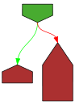
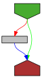
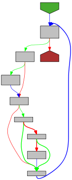

// Copyright 2009 The Go Authors. All rights reserved.
// Use of this source code is governed by a BSD-style
// license that can be found in the LICENSE file.
package fmt
import (
"internal/fmtsort"
"io"
"os"
"reflect"
"sync"
"unicode/utf8"
)
// Strings for use with buffer.WriteString.
// This is less overhead than using buffer.Write with byte arrays.
const (
commaSpaceString = ", "
nilAngleString = "<nil>"
nilParenString = "(nil)"
nilString = "nil"
mapString = "map["
percentBangString = "%!"
missingString = "(MISSING)"
badIndexString = "(BADINDEX)"
panicString = "(PANIC="
extraString = "%!(EXTRA "
badWidthString = "%!(BADWIDTH)"
badPrecString = "%!(BADPREC)"
noVerbString = "%!(NOVERB)"
invReflectString = "<invalid reflect.Value>"
)
// State represents the printer state passed to custom formatters.
// It provides access to the io.Writer interface plus information about
// the flags and options for the operand's format specifier.
type State interface {
// Write is the function to call to emit formatted output to be printed.
Write(b []byte) (n int, err error)
// Width returns the value of the width option and whether it has been set.
Width() (wid int, ok bool)
// Precision returns the value of the precision option and whether it has been set.
Precision() (prec int, ok bool)
// Flag reports whether the flag c, a character, has been set.
Flag(c int) bool
}
// Formatter is implemented by any value that has a Format method.
// The implementation controls how State and rune are interpreted,
// and may call Sprint(f) or Fprint(f) etc. to generate its output.
type Formatter interface {
Format(f State, verb rune)
}
// Stringer is implemented by any value that has a String method,
// which defines the ``native'' format for that value.
// The String method is used to print values passed as an operand
// to any format that accepts a string or to an unformatted printer
// such as Print.
type Stringer interface {
String() string
}
// GoStringer is implemented by any value that has a GoString method,
// which defines the Go syntax for that value.
// The GoString method is used to print values passed as an operand
// to a %#v format.
type GoStringer interface {
GoString() string
}
// Use simple []byte instead of bytes.Buffer to avoid large dependency.
type buffer []byte
|
|
func (b *buffer) write(p []byte) {
*b = append(*b, p...)
}
|
|
func (b *buffer) writeString(s string) {
*b = append(*b, s...)
}
|

|
func (b *buffer) writeByte(c byte) {
*b = append(*b, c)
}
|

|
func (bp *buffer) writeRune(r rune) {
if r < utf8.RuneSelf {
*bp = append(*bp, byte(r))
return
}
b := *bp
n := len(b)
for n+utf8.UTFMax > cap(b) {
b = append(b, 0)
}
w := utf8.EncodeRune(b[n:n+utf8.UTFMax], r)
*bp = b[:n+w]
}
// pp is used to store a printer's state and is reused with sync.Pool to avoid allocations.
type pp struct {
buf buffer
// arg holds the current item, as an interface{}.
arg any
// value is used instead of arg for reflect values.
value reflect.Value
// fmt is used to format basic items such as integers or strings.
fmt fmt
// reordered records whether the format string used argument reordering.
reordered bool
// goodArgNum records whether the most recent reordering directive was valid.
goodArgNum bool
// panicking is set by catchPanic to avoid infinite panic, recover, panic, ... recursion.
panicking bool
// erroring is set when printing an error string to guard against calling handleMethods.
erroring bool
// wrapErrs is set when the format string may contain a %w verb.
wrapErrs bool
// wrappedErr records the target of the %w verb.
wrappedErr error
}
var ppFree = sync.Pool{
|
|
New: func() any { return new(pp) },
}
// newPrinter allocates a new pp struct or grabs a cached one.
|

|
func newPrinter() *pp {
p := ppFree.Get().(*pp)
p.panicking = false
p.erroring = false
p.wrapErrs = false
p.fmt.init(&p.buf)
return p
}
// free saves used pp structs in ppFree; avoids an allocation per invocation.
|
|
func (p *pp) free() {
// Proper usage of a sync.Pool requires each entry to have approximately
// the same memory cost. To obtain this property when the stored type
// contains a variably-sized buffer, we add a hard limit on the maximum buffer
// to place back in the pool.
//
// See https://golang.org/issue/23199
if cap(p.buf) > 64<<10 {
return
}
p.buf = p.buf[:0]
p.arg = nil
p.value = reflect.Value{}
p.wrappedErr = nil
ppFree.Put(p)
}
|

|
func (p *pp) Width() (wid int, ok bool) { return p.fmt.wid, p.fmt.widPresent }
|

|
func (p *pp) Precision() (prec int, ok bool) { return p.fmt.prec, p.fmt.precPresent }
|

|
func (p *pp) Flag(b int) bool {
switch b {
case '-':
return p.fmt.minus
case '+':
return p.fmt.plus || p.fmt.plusV
case '#':
return p.fmt.sharp || p.fmt.sharpV
case ' ':
return p.fmt.space
case '0':
return p.fmt.zero
}
return false
}
// Implement Write so we can call Fprintf on a pp (through State), for
// recursive use in custom verbs.
|
|
func (p *pp) Write(b []byte) (ret int, err error) {
p.buf.write(b)
return len(b), nil
}
// Implement WriteString so that we can call io.WriteString
// on a pp (through state), for efficiency.
|

|
func (p *pp) WriteString(s string) (ret int, err error) {
p.buf.writeString(s)
return len(s), nil
}
// These routines end in 'f' and take a format string.
// Fprintf formats according to a format specifier and writes to w.
// It returns the number of bytes written and any write error encountered.
|

|
func Fprintf(w io.Writer, format string, a ...any) (n int, err error) {
p := newPrinter()
p.doPrintf(format, a)
n, err = w.Write(p.buf)
p.free()
return
}
// Printf formats according to a format specifier and writes to standard output.
// It returns the number of bytes written and any write error encountered.
|

|
func Printf(format string, a ...any) (n int, err error) {
return Fprintf(os.Stdout, format, a...)
}
// Sprintf formats according to a format specifier and returns the resulting string.
|

|
func Sprintf(format string, a ...any) string {
p := newPrinter()
p.doPrintf(format, a)
s := string(p.buf)
p.free()
return s
}
// These routines do not take a format string
// Fprint formats using the default formats for its operands and writes to w.
// Spaces are added between operands when neither is a string.
// It returns the number of bytes written and any write error encountered.
|

|
func Fprint(w io.Writer, a ...any) (n int, err error) {
p := newPrinter()
p.doPrint(a)
n, err = w.Write(p.buf)
p.free()
return
}
// Print formats using the default formats for its operands and writes to standard output.
// Spaces are added between operands when neither is a string.
// It returns the number of bytes written and any write error encountered.
|

|
func Print(a ...any) (n int, err error) {
return Fprint(os.Stdout, a...)
}
// Sprint formats using the default formats for its operands and returns the resulting string.
// Spaces are added between operands when neither is a string.
|
|
func Sprint(a ...any) string {
p := newPrinter()
p.doPrint(a)
s := string(p.buf)
p.free()
return s
}
// These routines end in 'ln', do not take a format string,
// always add spaces between operands, and add a newline
// after the last operand.
// Fprintln formats using the default formats for its operands and writes to w.
// Spaces are always added between operands and a newline is appended.
// It returns the number of bytes written and any write error encountered.
|

|
func Fprintln(w io.Writer, a ...any) (n int, err error) {
p := newPrinter()
p.doPrintln(a)
n, err = w.Write(p.buf)
p.free()
return
}
// Println formats using the default formats for its operands and writes to standard output.
// Spaces are always added between operands and a newline is appended.
// It returns the number of bytes written and any write error encountered.
|

|
func Println(a ...any) (n int, err error) {
return Fprintln(os.Stdout, a...)
}
// Sprintln formats using the default formats for its operands and returns the resulting string.
// Spaces are always added between operands and a newline is appended.
|

|
func Sprintln(a ...any) string {
p := newPrinter()
p.doPrintln(a)
s := string(p.buf)
p.free()
return s
}
// getField gets the i'th field of the struct value.
// If the field is itself is an interface, return a value for
// the thing inside the interface, not the interface itself.
|

|
func getField(v reflect.Value, i int) reflect.Value {
val := v.Field(i)
if val.Kind() == reflect.Interface && !val.IsNil() {
val = val.Elem()
}
return val
}
// tooLarge reports whether the magnitude of the integer is
// too large to be used as a formatting width or precision.
|
|
func tooLarge(x int) bool {
const max int = 1e6
return x > max || x < -max
}
// parsenum converts ASCII to integer. num is 0 (and isnum is false) if no number present.
|

|
func parsenum(s string, start, end int) (num int, isnum bool, newi int) {
if start >= end {
return 0, false, end
}
for newi = start; newi < end && '0' <= s[newi] && s[newi] <= '9'; newi++ {
if tooLarge(num) {
return 0, false, end // Overflow; crazy long number most likely.
}
num = num*10 + int(s[newi]-'0')
isnum = true
}
return
}
|
|
func (p *pp) unknownType(v reflect.Value) {
if !v.IsValid() {
p.buf.writeString(nilAngleString)
return
}
p.buf.writeByte('?')
p.buf.writeString(v.Type().String())
p.buf.writeByte('?')
}
|
|
func (p *pp) badVerb(verb rune) {
p.erroring = true
p.buf.writeString(percentBangString)
p.buf.writeRune(verb)
p.buf.writeByte('(')
switch {
case p.arg != nil:
p.buf.writeString(reflect.TypeOf(p.arg).String())
p.buf.writeByte('=')
p.printArg(p.arg, 'v')
case p.value.IsValid():
p.buf.writeString(p.value.Type().String())
p.buf.writeByte('=')
p.printValue(p.value, 'v', 0)
default:
p.buf.writeString(nilAngleString)
}
p.buf.writeByte(')')
p.erroring = false
}
|
|
func (p *pp) fmtBool(v bool, verb rune) {
switch verb {
case 't', 'v':
p.fmt.fmtBoolean(v)
default:
p.badVerb(verb)
}
}
// fmt0x64 formats a uint64 in hexadecimal and prefixes it with 0x or
// not, as requested, by temporarily setting the sharp flag.
|
|
func (p *pp) fmt0x64(v uint64, leading0x bool) {
sharp := p.fmt.sharp
p.fmt.sharp = leading0x
p.fmt.fmtInteger(v, 16, unsigned, 'v', ldigits)
p.fmt.sharp = sharp
}
// fmtInteger formats a signed or unsigned integer.
|
|
func (p *pp) fmtInteger(v uint64, isSigned bool, verb rune) {
switch verb {
case 'v':
if p.fmt.sharpV && !isSigned {
p.fmt0x64(v, true)
} else {
p.fmt.fmtInteger(v, 10, isSigned, verb, ldigits)
}
case 'd':
p.fmt.fmtInteger(v, 10, isSigned, verb, ldigits)
case 'b':
p.fmt.fmtInteger(v, 2, isSigned, verb, ldigits)
case 'o', 'O':
p.fmt.fmtInteger(v, 8, isSigned, verb, ldigits)
case 'x':
p.fmt.fmtInteger(v, 16, isSigned, verb, ldigits)
case 'X':
p.fmt.fmtInteger(v, 16, isSigned, verb, udigits)
case 'c':
p.fmt.fmtC(v)
case 'q':
p.fmt.fmtQc(v)
case 'U':
p.fmt.fmtUnicode(v)
default:
p.badVerb(verb)
}
}
// fmtFloat formats a float. The default precision for each verb
// is specified as last argument in the call to fmt_float.
|
|
func (p *pp) fmtFloat(v float64, size int, verb rune) {
switch verb {
case 'v':
p.fmt.fmtFloat(v, size, 'g', -1)
case 'b', 'g', 'G', 'x', 'X':
p.fmt.fmtFloat(v, size, verb, -1)
case 'f', 'e', 'E':
p.fmt.fmtFloat(v, size, verb, 6)
case 'F':
p.fmt.fmtFloat(v, size, 'f', 6)
default:
p.badVerb(verb)
}
}
// fmtComplex formats a complex number v with
// r = real(v) and j = imag(v) as (r+ji) using
// fmtFloat for r and j formatting.
|
|
func (p *pp) fmtComplex(v complex128, size int, verb rune) {
// Make sure any unsupported verbs are found before the
// calls to fmtFloat to not generate an incorrect error string.
switch verb {
case 'v', 'b', 'g', 'G', 'x', 'X', 'f', 'F', 'e', 'E':
oldPlus := p.fmt.plus
p.buf.writeByte('(')
p.fmtFloat(real(v), size/2, verb)
// Imaginary part always has a sign.
p.fmt.plus = true
p.fmtFloat(imag(v), size/2, verb)
p.buf.writeString("i)")
p.fmt.plus = oldPlus
default:
p.badVerb(verb)
}
}
|
|
func (p *pp) fmtString(v string, verb rune) {
switch verb {
case 'v':
if p.fmt.sharpV {
p.fmt.fmtQ(v)
} else {
p.fmt.fmtS(v)
}
case 's':
p.fmt.fmtS(v)
case 'x':
p.fmt.fmtSx(v, ldigits)
case 'X':
p.fmt.fmtSx(v, udigits)
case 'q':
p.fmt.fmtQ(v)
default:
p.badVerb(verb)
}
}
|
|
func (p *pp) fmtBytes(v []byte, verb rune, typeString string) {
switch verb {
case 'v', 'd':
if p.fmt.sharpV {
p.buf.writeString(typeString)
if v == nil {
p.buf.writeString(nilParenString)
return
}
p.buf.writeByte('{')
for i, c := range v {
if i > 0 {
p.buf.writeString(commaSpaceString)
}
p.fmt0x64(uint64(c), true)
}
p.buf.writeByte('}')
} else {
p.buf.writeByte('[')
for i, c := range v {
if i > 0 {
p.buf.writeByte(' ')
}
p.fmt.fmtInteger(uint64(c), 10, unsigned, verb, ldigits)
}
p.buf.writeByte(']')
}
case 's':
p.fmt.fmtBs(v)
case 'x':
p.fmt.fmtBx(v, ldigits)
case 'X':
p.fmt.fmtBx(v, udigits)
case 'q':
p.fmt.fmtQ(string(v))
default:
p.printValue(reflect.ValueOf(v), verb, 0)
}
}
|
|
func (p *pp) fmtPointer(value reflect.Value, verb rune) {
var u uintptr
switch value.Kind() {
case reflect.Chan, reflect.Func, reflect.Map, reflect.Pointer, reflect.Slice, reflect.UnsafePointer:
u = value.Pointer()
default:
p.badVerb(verb)
return
}
switch verb {
case 'v':
if p.fmt.sharpV {
p.buf.writeByte('(')
p.buf.writeString(value.Type().String())
p.buf.writeString(")(")
if u == 0 {
p.buf.writeString(nilString)
} else {
p.fmt0x64(uint64(u), true)
}
p.buf.writeByte(')')
} else {
if u == 0 {
p.fmt.padString(nilAngleString)
} else {
p.fmt0x64(uint64(u), !p.fmt.sharp)
}
}
case 'p':
p.fmt0x64(uint64(u), !p.fmt.sharp)
case 'b', 'o', 'd', 'x', 'X':
p.fmtInteger(uint64(u), unsigned, verb)
default:
p.badVerb(verb)
}
}
|
|
func (p *pp) catchPanic(arg any, verb rune, method string) {
if err := recover(); err != nil {
// If it's a nil pointer, just say "<nil>". The likeliest causes are a
// Stringer that fails to guard against nil or a nil pointer for a
// value receiver, and in either case, "<nil>" is a nice result.
if v := reflect.ValueOf(arg); v.Kind() == reflect.Pointer && v.IsNil() {
p.buf.writeString(nilAngleString)
return
}
// Otherwise print a concise panic message. Most of the time the panic
// value will print itself nicely.
if p.panicking {
// Nested panics; the recursion in printArg cannot succeed.
panic(err)
}
oldFlags := p.fmt.fmtFlags
// For this output we want default behavior.
p.fmt.clearflags()
p.buf.writeString(percentBangString)
p.buf.writeRune(verb)
p.buf.writeString(panicString)
p.buf.writeString(method)
p.buf.writeString(" method: ")
p.panicking = true
p.printArg(err, 'v')
p.panicking = false
p.buf.writeByte(')')
p.fmt.fmtFlags = oldFlags
}
}
|
|
func (p *pp) handleMethods(verb rune) (handled bool) {
if p.erroring {
return
}
if verb == 'w' {
// It is invalid to use %w other than with Errorf, more than once,
// or with a non-error arg.
err, ok := p.arg.(error)
if !ok || !p.wrapErrs || p.wrappedErr != nil {
p.wrappedErr = nil
p.wrapErrs = false
p.badVerb(verb)
return true
}
p.wrappedErr = err
// If the arg is a Formatter, pass 'v' as the verb to it.
verb = 'v'
}
// Is it a Formatter?
if formatter, ok := p.arg.(Formatter); ok {
handled = true
defer p.catchPanic(p.arg, verb, "Format")
formatter.Format(p, verb)
return
}
// If we're doing Go syntax and the argument knows how to supply it, take care of it now.
if p.fmt.sharpV {
if stringer, ok := p.arg.(GoStringer); ok {
handled = true
defer p.catchPanic(p.arg, verb, "GoString")
// Print the result of GoString unadorned.
p.fmt.fmtS(stringer.GoString())
return
}
} else {
// If a string is acceptable according to the format, see if
// the value satisfies one of the string-valued interfaces.
// Println etc. set verb to %v, which is "stringable".
switch verb {
case 'v', 's', 'x', 'X', 'q':
// Is it an error or Stringer?
// The duplication in the bodies is necessary:
// setting handled and deferring catchPanic
// must happen before calling the method.
switch v := p.arg.(type) {
case error:
handled = true
defer p.catchPanic(p.arg, verb, "Error")
p.fmtString(v.Error(), verb)
return
case Stringer:
handled = true
defer p.catchPanic(p.arg, verb, "String")
p.fmtString(v.String(), verb)
return
}
}
}
return false
}
|
|
func (p *pp) printArg(arg any, verb rune) {
p.arg = arg
p.value = reflect.Value{}
if arg == nil {
switch verb {
case 'T', 'v':
p.fmt.padString(nilAngleString)
default:
p.badVerb(verb)
}
return
}
// Special processing considerations.
// %T (the value's type) and %p (its address) are special; we always do them first.
switch verb {
case 'T':
p.fmt.fmtS(reflect.TypeOf(arg).String())
return
case 'p':
p.fmtPointer(reflect.ValueOf(arg), 'p')
return
}
// Some types can be done without reflection.
switch f := arg.(type) {
case bool:
p.fmtBool(f, verb)
case float32:
p.fmtFloat(float64(f), 32, verb)
case float64:
p.fmtFloat(f, 64, verb)
case complex64:
p.fmtComplex(complex128(f), 64, verb)
case complex128:
p.fmtComplex(f, 128, verb)
case int:
p.fmtInteger(uint64(f), signed, verb)
case int8:
p.fmtInteger(uint64(f), signed, verb)
case int16:
p.fmtInteger(uint64(f), signed, verb)
case int32:
p.fmtInteger(uint64(f), signed, verb)
case int64:
p.fmtInteger(uint64(f), signed, verb)
case uint:
p.fmtInteger(uint64(f), unsigned, verb)
case uint8:
p.fmtInteger(uint64(f), unsigned, verb)
case uint16:
p.fmtInteger(uint64(f), unsigned, verb)
case uint32:
p.fmtInteger(uint64(f), unsigned, verb)
case uint64:
p.fmtInteger(f, unsigned, verb)
case uintptr:
p.fmtInteger(uint64(f), unsigned, verb)
case string:
p.fmtString(f, verb)
case []byte:
p.fmtBytes(f, verb, "[]byte")
case reflect.Value:
// Handle extractable values with special methods
// since printValue does not handle them at depth 0.
if f.IsValid() && f.CanInterface() {
p.arg = f.Interface()
if p.handleMethods(verb) {
return
}
}
p.printValue(f, verb, 0)
default:
// If the type is not simple, it might have methods.
if !p.handleMethods(verb) {
// Need to use reflection, since the type had no
// interface methods that could be used for formatting.
p.printValue(reflect.ValueOf(f), verb, 0)
}
}
}
// printValue is similar to printArg but starts with a reflect value, not an interface{} value.
// It does not handle 'p' and 'T' verbs because these should have been already handled by printArg.
|
|
func (p *pp) printValue(value reflect.Value, verb rune, depth int) {
// Handle values with special methods if not already handled by printArg (depth == 0).
if depth > 0 && value.IsValid() && value.CanInterface() {
p.arg = value.Interface()
if p.handleMethods(verb) {
return
}
}
p.arg = nil
p.value = value
switch f := value; value.Kind() {
case reflect.Invalid:
if depth == 0 {
p.buf.writeString(invReflectString)
} else {
switch verb {
case 'v':
p.buf.writeString(nilAngleString)
default:
p.badVerb(verb)
}
}
case reflect.Bool:
p.fmtBool(f.Bool(), verb)
case reflect.Int, reflect.Int8, reflect.Int16, reflect.Int32, reflect.Int64:
p.fmtInteger(uint64(f.Int()), signed, verb)
case reflect.Uint, reflect.Uint8, reflect.Uint16, reflect.Uint32, reflect.Uint64, reflect.Uintptr:
p.fmtInteger(f.Uint(), unsigned, verb)
case reflect.Float32:
p.fmtFloat(f.Float(), 32, verb)
case reflect.Float64:
p.fmtFloat(f.Float(), 64, verb)
case reflect.Complex64:
p.fmtComplex(f.Complex(), 64, verb)
case reflect.Complex128:
p.fmtComplex(f.Complex(), 128, verb)
case reflect.String:
p.fmtString(f.String(), verb)
case reflect.Map:
if p.fmt.sharpV {
p.buf.writeString(f.Type().String())
if f.IsNil() {
p.buf.writeString(nilParenString)
return
}
p.buf.writeByte('{')
} else {
p.buf.writeString(mapString)
}
sorted := fmtsort.Sort(f)
for i, key := range sorted.Key {
if i > 0 {
if p.fmt.sharpV {
p.buf.writeString(commaSpaceString)
} else {
p.buf.writeByte(' ')
}
}
p.printValue(key, verb, depth+1)
p.buf.writeByte(':')
p.printValue(sorted.Value[i], verb, depth+1)
}
if p.fmt.sharpV {
p.buf.writeByte('}')
} else {
p.buf.writeByte(']')
}
case reflect.Struct:
if p.fmt.sharpV {
p.buf.writeString(f.Type().String())
}
p.buf.writeByte('{')
for i := 0; i < f.NumField(); i++ {
if i > 0 {
if p.fmt.sharpV {
p.buf.writeString(commaSpaceString)
} else {
p.buf.writeByte(' ')
}
}
if p.fmt.plusV || p.fmt.sharpV {
if name := f.Type().Field(i).Name; name != "" {
p.buf.writeString(name)
p.buf.writeByte(':')
}
}
p.printValue(getField(f, i), verb, depth+1)
}
p.buf.writeByte('}')
case reflect.Interface:
value := f.Elem()
if !value.IsValid() {
if p.fmt.sharpV {
p.buf.writeString(f.Type().String())
p.buf.writeString(nilParenString)
} else {
p.buf.writeString(nilAngleString)
}
} else {
p.printValue(value, verb, depth+1)
}
case reflect.Array, reflect.Slice:
switch verb {
case 's', 'q', 'x', 'X':
// Handle byte and uint8 slices and arrays special for the above verbs.
t := f.Type()
if t.Elem().Kind() == reflect.Uint8 {
var bytes []byte
if f.Kind() == reflect.Slice {
bytes = f.Bytes()
} else if f.CanAddr() {
bytes = f.Slice(0, f.Len()).Bytes()
} else {
// We have an array, but we cannot Slice() a non-addressable array,
// so we build a slice by hand. This is a rare case but it would be nice
// if reflection could help a little more.
bytes = make([]byte, f.Len())
for i := range bytes {
bytes[i] = byte(f.Index(i).Uint())
}
}
p.fmtBytes(bytes, verb, t.String())
return
}
}
if p.fmt.sharpV {
p.buf.writeString(f.Type().String())
if f.Kind() == reflect.Slice && f.IsNil() {
p.buf.writeString(nilParenString)
return
}
p.buf.writeByte('{')
for i := 0; i < f.Len(); i++ {
if i > 0 {
p.buf.writeString(commaSpaceString)
}
p.printValue(f.Index(i), verb, depth+1)
}
p.buf.writeByte('}')
} else {
p.buf.writeByte('[')
for i := 0; i < f.Len(); i++ {
if i > 0 {
p.buf.writeByte(' ')
}
p.printValue(f.Index(i), verb, depth+1)
}
p.buf.writeByte(']')
}
case reflect.Pointer:
// pointer to array or slice or struct? ok at top level
// but not embedded (avoid loops)
if depth == 0 && f.Pointer() != 0 {
switch a := f.Elem(); a.Kind() {
case reflect.Array, reflect.Slice, reflect.Struct, reflect.Map:
p.buf.writeByte('&')
p.printValue(a, verb, depth+1)
return
}
}
fallthrough
case reflect.Chan, reflect.Func, reflect.UnsafePointer:
p.fmtPointer(f, verb)
default:
p.unknownType(f)
}
}
// intFromArg gets the argNumth element of a. On return, isInt reports whether the argument has integer type.
|
|
func intFromArg(a []any, argNum int) (num int, isInt bool, newArgNum int) {
newArgNum = argNum
if argNum < len(a) {
num, isInt = a[argNum].(int) // Almost always OK.
if !isInt {
// Work harder.
switch v := reflect.ValueOf(a[argNum]); v.Kind() {
case reflect.Int, reflect.Int8, reflect.Int16, reflect.Int32, reflect.Int64:
n := v.Int()
if int64(int(n)) == n {
num = int(n)
isInt = true
}
case reflect.Uint, reflect.Uint8, reflect.Uint16, reflect.Uint32, reflect.Uint64, reflect.Uintptr:
n := v.Uint()
if int64(n) >= 0 && uint64(int(n)) == n {
num = int(n)
isInt = true
}
default:
// Already 0, false.
}
}
newArgNum = argNum + 1
if tooLarge(num) {
num = 0
isInt = false
}
}
return
}
// parseArgNumber returns the value of the bracketed number, minus 1
// (explicit argument numbers are one-indexed but we want zero-indexed).
// The opening bracket is known to be present at format[0].
// The returned values are the index, the number of bytes to consume
// up to the closing paren, if present, and whether the number parsed
// ok. The bytes to consume will be 1 if no closing paren is present.
|
|
func parseArgNumber(format string) (index int, wid int, ok bool) {
// There must be at least 3 bytes: [n].
if len(format) < 3 {
return 0, 1, false
}
// Find closing bracket.
for i := 1; i < len(format); i++ {
if format[i] == ']' {
width, ok, newi := parsenum(format, 1, i)
if !ok || newi != i {
return 0, i + 1, false
}
return width - 1, i + 1, true // arg numbers are one-indexed and skip paren.
}
}
return 0, 1, false
}
// argNumber returns the next argument to evaluate, which is either the value of the passed-in
// argNum or the value of the bracketed integer that begins format[i:]. It also returns
// the new value of i, that is, the index of the next byte of the format to process.
|
|
func (p *pp) argNumber(argNum int, format string, i int, numArgs int) (newArgNum, newi int, found bool) {
if len(format) <= i || format[i] != '[' {
return argNum, i, false
}
p.reordered = true
index, wid, ok := parseArgNumber(format[i:])
if ok && 0 <= index && index < numArgs {
return index, i + wid, true
}
p.goodArgNum = false
return argNum, i + wid, ok
}
|
|
func (p *pp) badArgNum(verb rune) {
p.buf.writeString(percentBangString)
p.buf.writeRune(verb)
p.buf.writeString(badIndexString)
}
|

|
func (p *pp) missingArg(verb rune) {
p.buf.writeString(percentBangString)
p.buf.writeRune(verb)
p.buf.writeString(missingString)
}
|
|
func (p *pp) doPrintf(format string, a []any) {
end := len(format)
argNum := 0 // we process one argument per non-trivial format
afterIndex := false // previous item in format was an index like [3].
p.reordered = false
formatLoop:
for i := 0; i < end; {
p.goodArgNum = true
lasti := i
for i < end && format[i] != '%' {
i++
}
if i > lasti {
p.buf.writeString(format[lasti:i])
}
if i >= end {
// done processing format string
break
}
// Process one verb
i++
// Do we have flags?
p.fmt.clearflags()
simpleFormat:
for ; i < end; i++ {
c := format[i]
switch c {
case '#':
p.fmt.sharp = true
case '0':
p.fmt.zero = !p.fmt.minus // Only allow zero padding to the left.
case '+':
p.fmt.plus = true
case '-':
p.fmt.minus = true
p.fmt.zero = false // Do not pad with zeros to the right.
case ' ':
p.fmt.space = true
default:
// Fast path for common case of ascii lower case simple verbs
// without precision or width or argument indices.
if 'a' <= c && c <= 'z' && argNum < len(a) {
if c == 'v' {
// Go syntax
p.fmt.sharpV = p.fmt.sharp
p.fmt.sharp = false
// Struct-field syntax
p.fmt.plusV = p.fmt.plus
p.fmt.plus = false
}
p.printArg(a[argNum], rune(c))
argNum++
i++
continue formatLoop
}
// Format is more complex than simple flags and a verb or is malformed.
break simpleFormat
}
}
// Do we have an explicit argument index?
argNum, i, afterIndex = p.argNumber(argNum, format, i, len(a))
// Do we have width?
if i < end && format[i] == '*' {
i++
p.fmt.wid, p.fmt.widPresent, argNum = intFromArg(a, argNum)
if !p.fmt.widPresent {
p.buf.writeString(badWidthString)
}
// We have a negative width, so take its value and ensure
// that the minus flag is set
if p.fmt.wid < 0 {
p.fmt.wid = -p.fmt.wid
p.fmt.minus = true
p.fmt.zero = false // Do not pad with zeros to the right.
}
afterIndex = false
} else {
p.fmt.wid, p.fmt.widPresent, i = parsenum(format, i, end)
if afterIndex && p.fmt.widPresent { // "%[3]2d"
p.goodArgNum = false
}
}
// Do we have precision?
if i+1 < end && format[i] == '.' {
i++
if afterIndex { // "%[3].2d"
p.goodArgNum = false
}
argNum, i, afterIndex = p.argNumber(argNum, format, i, len(a))
if i < end && format[i] == '*' {
i++
p.fmt.prec, p.fmt.precPresent, argNum = intFromArg(a, argNum)
// Negative precision arguments don't make sense
if p.fmt.prec < 0 {
p.fmt.prec = 0
p.fmt.precPresent = false
}
if !p.fmt.precPresent {
p.buf.writeString(badPrecString)
}
afterIndex = false
} else {
p.fmt.prec, p.fmt.precPresent, i = parsenum(format, i, end)
if !p.fmt.precPresent {
p.fmt.prec = 0
p.fmt.precPresent = true
}
}
}
if !afterIndex {
argNum, i, afterIndex = p.argNumber(argNum, format, i, len(a))
}
if i >= end {
p.buf.writeString(noVerbString)
break
}
verb, size := rune(format[i]), 1
if verb >= utf8.RuneSelf {
verb, size = utf8.DecodeRuneInString(format[i:])
}
i += size
switch {
case verb == '%': // Percent does not absorb operands and ignores f.wid and f.prec.
p.buf.writeByte('%')
case !p.goodArgNum:
p.badArgNum(verb)
case argNum >= len(a): // No argument left over to print for the current verb.
p.missingArg(verb)
case verb == 'v':
// Go syntax
p.fmt.sharpV = p.fmt.sharp
p.fmt.sharp = false
// Struct-field syntax
p.fmt.plusV = p.fmt.plus
p.fmt.plus = false
fallthrough
default:
p.printArg(a[argNum], verb)
argNum++
}
}
// Check for extra arguments unless the call accessed the arguments
// out of order, in which case it's too expensive to detect if they've all
// been used and arguably OK if they're not.
if !p.reordered && argNum < len(a) {
p.fmt.clearflags()
p.buf.writeString(extraString)
for i, arg := range a[argNum:] {
if i > 0 {
p.buf.writeString(commaSpaceString)
}
if arg == nil {
p.buf.writeString(nilAngleString)
} else {
p.buf.writeString(reflect.TypeOf(arg).String())
p.buf.writeByte('=')
p.printArg(arg, 'v')
}
}
p.buf.writeByte(')')
}
}
|
|
func (p *pp) doPrint(a []any) {
prevString := false
for argNum, arg := range a {
isString := arg != nil && reflect.TypeOf(arg).Kind() == reflect.String
// Add a space between two non-string arguments.
if argNum > 0 && !isString && !prevString {
p.buf.writeByte(' ')
}
p.printArg(arg, 'v')
prevString = isString
}
}
// doPrintln is like doPrint but always adds a space between arguments
// and a newline after the last argument.
|

|
func (p *pp) doPrintln(a []any) {
for argNum, arg := range a {
if argNum > 0 {
p.buf.writeByte(' ')
}
p.printArg(arg, 'v')
}
p.buf.writeByte('\n')
}
|
|